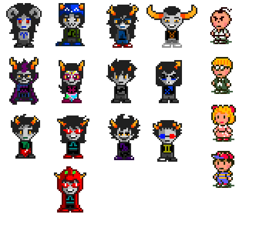
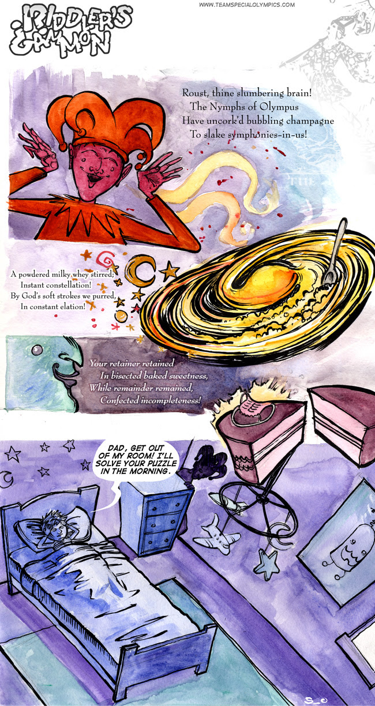
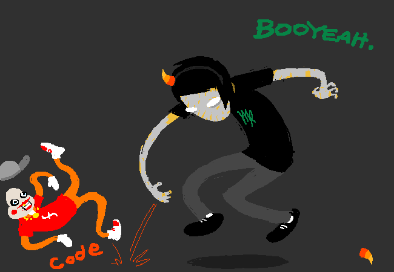
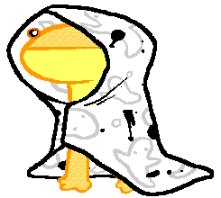
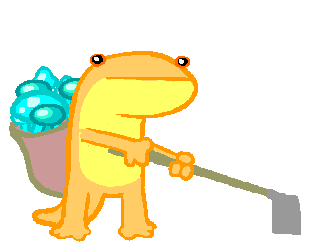
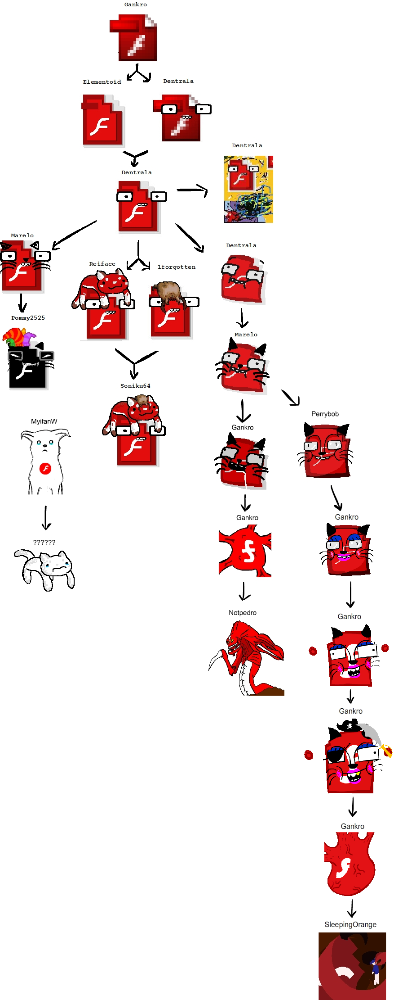

Memories of Working on Homestuck
I was contacted a few weeks ago by someone interested in my time working on Homestuck. I dumped a huge pile of thoughts and feels, and they wrote an article.
The article understandably is fairly edited, but I spent a bunch of time on my replies, and they’re pretty personal, so I felt like archiving my response here. So here’s the raw content of the email I sent:
So some disclaimers here: I don’t have the best memory, and a lot of the relevant history here is content on the MSPA forums, which as far as I can tell have been completely annihilated from the internet. (a genuine tragedy) Consider everything I say to be suffixed with an “(I think?)” :)
Question: How did you end up doing coding work for Hussie?
So it’s April 2009, I’m 16, a huge fan of Problem Sleuth, and an aspiring Flash game developer (longtime denizen of newgrounds).
April 10th: Homestuck BETA drops (http://www.mspaintadventures.com/?s=5)
Andrew announces it’s going to be done entirely in Flash.
I lose my mind!!!! This is amazing!!!!
April 13th: Andrew realizes doing everything in Flash is a Terrible Idea, Homestuck relaunches in the mixed media format we now know.
April 14th: I am sad, because I friggin’ love Flash, but also excited! I make an account on the MSPA forums and make a thread where I start posting a bunch of little mini games/toys I made in flash. At some point Andrew rolled into the thread, and was like “hey this is cool”, and I’m blown away because Andrew Hussie is here saying my stuff is cool! I begged him to draw Problem Sleuth in my shitty Flash-based MS Paint clone, and he did!

Then Andrew PMs me on the forums asking if I’d be interested in working on some more complex interactive stuff for MSPA itself. And I’m like UH YEAH OF COURSE? Making games in Flash is my dream, and Andrew is like my hero!!
This would eventually become [S] YOU THERE. BOY. (Project 01 - John Wander). Sadly, I think all of that work happened over forum PMs, so I don’t really know the details or timeline here. All I know is that exactly two months after I joined the forums, I received $200 for my work! (This ends up not being my first Professional Flash Game, as in those two months I also somehow ended up programming Reincarnation: Riley’s Out Again for Chris Gianelloni - also $200. Yeah weirdly starving artists can’t pay you much? Good thing I was still a kid with no bills!)
Question: How did your contributions get designed? Did Hussie approach you with a specific plan already in mind or was it more collaborative? Did you have any creative license?
Ok this is the long question, and it’s gonna dive into some messy personal stuff. Sorry!
So the biggest thing to keep in mind with MSPA is that it’s based entirely off of collaboratively riffing off eachother’s ideas. It started out as a faux text-based adventure where people would post prompts, and Andrew would take the ones he liked and riff off of them. As far as I’m concerned this is Andrew’s super power: the ability to take a pile of things (comments, art, music, ideas, people) and rapidly recombine them into amazing things. The chatlogs in Homestuck full of amazing back and forths? That’s just what talking to Andrew in chat was. Constant riffing and feedback loops.
Anyway, this is all to say that the genesis of ideas, and even how things got developed, is honestly really murky with Homestuck? Everything was kinda adhoc, a riff-on-a-riff, and done in incredibly little time.
Originally we developed everything over private messages on the MSPA forums with links. Over the years we would make use of email, AIM(?) chat, and a secret forum where the other artists and musicians hung out and riffed off eachother’s work with occasional direction from Andrew.
As an example, when we started Project 07 - Alterniabound, sprites from Earthbound and Secret of Mana were introduced on the secret forums as pixel-spriting references, and I rigged the Earthbound ones up for my early development. But then the became templates for our animations. And then someone made Gamzee do the Secret of Mana dance. And then Andrew told me to put it in the final thing because it existed:
(My workflow frequently involved importing animated gifs directly into Flash, because it weirdly supported this Incredibly Well, and meant there was literally no difference between an artist sharing it on the forum and me receiving the final design)
As for my part in the whole thing, it was a lot of content firehoses and me racing to keep up with them. Andrew worked fast, and when we started I was a highschool student with a part time job at a grocery store (later, only an unemployed university student studying game dev).
Andrew would variously send me directories full of assets, Flash files with some stuff already rigged up, huge text dumps of dialogue/descriptions, or gif mockups of scenes I should rig up in Flash. I would just scramble to get it all done in a reasonable time-frame.
I can’t emphasize this scramble enough. Andrew was a ceaseless content machine, and I don’t think I was ever “blocked” on him producing content. Which is ridiculous considering how much content is packed into our games. (like, hundreds of pages of dialogue). He literally traveled back in time to make a comic about our development process while I was rigging up the content:
or more concisely
I honestly pushed myself too hard here. I don’t think Andrew really understood how hard this stuff was on me; I think he’s a good enough guy that he would’ve given me more space if he realized what I was doing to myself. But he’s just so productive and I burnt myself out really hard trying to keep up with someone who, ultimately, was my hero that I didn’t want to disappoint. I have two intense negative memories from working on homestuck:
- Begging Andrew (I think I was in tears irl) to just wait another day for me to finish one of our projects, because he wanted to start posting more pages of the story (he was that far ahead of me).
- Being so stressed out from working on one of our projects that I went to a party and drunk myself sick (I normally don’t drink alcohol at all, for context)
I honestly can’t remember which projects these were. I think it was probably the HTML5 games, since they were so much more work?
As an example of the pace at which we worked, consider Project 09 - Triterniabound, which I believe was done entirely over email in 3 days:
Andrew Hussie - Thursday, Feb 3, 2011: 1:00 AM
Have time in the next few days for another one of these AB-LITE things?
Should be even liter than last one, just involving Equius and Nepeta as playables, and probably no other interactable character. One room, with possibly one or two smaller branching rooms. Chests to a minimum.
[editor’s note: this entire paragraph would soon become a massive lie]
Aria Beingessner - 9:00 AM (I presumably wake up)
Well I’ve gotta write a paper tonight and some game dev stuff to work on during the weekend, what exactly is “next few days” to you?
Andrew Hussie - 4:00 PM (Andrew presumably wakes up)
How about we jam it in post-paper and pre-weekend?
Aria Beingessner
That would be tonight I guess? If it’s the magnitude you suggest I should be able to get it done fairly easily between my various piecemeal obligations.
Andrew Hussie
Could be tonight. With maybe some last details patched in tomorrow?
Aria Beingessner - 4:30PM
Yeah that’s fine but anything done tomorrow would have to be very early or very late in the day.
Andrew Hussie - Friday, 1:00 AM
Ok here’s room 1. Plus foreground layer to overlap to make walking around feel more natural if needed.
Start as Equius. Put him anywhere for now. Nepeta is also in the room, and playable.
Milk files: drop a few glasses of milk in the room here and there. For every milk:
> Drink milk.
If done with Equius, replace with broken glass. Then prompt: "Fiddlesticks."
If done with Nepeta, just prompt "lap lap lap lap lap :33"
Broken milks can be unexaminable.<4 gifs attached>
Andrew Hussie - 8:00 PM
Ok, there’ll be more rooms than I said, but most of these are really trivial. Basically just glorified paths from point A to point B, leading to a minor cut scene. Room 2 is the only one of any detail.
Room 2 stuff:
Put "great" in front of grate, sandwiching it between text and arrow, with its 2 frame animation in play.
If examine:
> Enter great, you mean grate.
You go in, on to room 3, etc.
Put the crates in front of the OTP drawing, lining up with the tiles underneath. If examine:
> Examine creats, you mean crates.
Crates fall over, swap crate img with crates2. Becomes the layout of the room thereafter.
There'll be text associated with this action, but we'll save that for the text dump.
Navigation:
Room 1:
> Enter door.
To room 2.
> Enter great, you mean grate.
To room 3.
First two grates are one panel cut scenes.
Left most grate is door.
> Enter grate.
To room 4, out of right grate. Transportalizers are inactive, but examinable.
Left grate is door.
> Enter grate.
To room 5.
Final grate is cut scene.<7 more gifs attached>
(several more content dumps pass, I request some clarifications/corrections, occasionally post a progress swf)
Here’s an example “text dump” (using a simple plaintext notation I had made, and the game engine parsed to do sprites):
Andrew Hussie - Saturday, 6:00AM (still awake?)
Note: there will be two new expressions: ACRoleplay and CTRoleplay to be provided shortly.
[editor’s note: part of dump removed because there’s SO MUCH TEXT?]
AS NEPETA
> Suggest one last feelings jam in the pile.
> Roleplay.
> Tacklepounce.
> Be Equius.
> Suggest one last feelings jam in the pile.
ACSad NEPETA: :33 < *nepeta sh33pishly looks at her shoe with a question on her purrsed lips*
CTTalk EQUIUS: D --> For pete's goodfornothing di%ie whistling SA%ES, Nepeta
CTTalk EQUIUS: D --> I am through talking about feelings, now go hide like I commanded
ACShocked NEPETA: :33 < but so many of our friends have died, and it just makes me so sad to think about!
ACTalk NEPETA: :33 < i dont think we have even scratched the surface of our f33lings yet, and our f33lings in this case are a very tall and inviting carpeted post to sink our claws into!
CTTalk EQUIUS: D --> I do not hoove claws
CTTalk EQUIUS: D --> I mean have claws
ACAngry NEPETA: :33 < i KNOW, i was speaking metafurrikitty :33
CTTalk EQUIUS: D --> *Mr. Zahhak rolls his eyes, which remain concealed and a100f as ever*
ACTalk NEPETA: :33 < besides, i know for a FACT that you are still f33ling b100 (h33h33) from losing aradia
CTTalk EQUIUS: D --> I suppose
ACTalk NEPETA: :33 < i did not mention, but i think i should...
ACCheery NEPETA: :33 < it may purrk you up to know that i had a dream about her during my last catnap!
CTTalk EQUIUS: D --> You did
ACTalk NEPETA: :33 < yes, she had these purrty wings and a splendid hood, i think she might have b33n cosplaying much like friska has b33n!
CTTalk EQUIUS: D --> Uh huh
ACCheery NEPETA: :33 < she was so happy, just like she used to be, and she said she would s33 you soon!
CTTalk EQUIUS: D --> That's a nice thought, and thank you for sharing it
CTTalk EQUIUS: D --> But it was only a dream, and will surely have no consequence in reality
ACThinking NEPETA: :33 < equius?
ACCoy NEPETA: :33 < are those f33lings i an detecting with my wiggly whiskery nose?
CTTalk EQUIUS: D --> Maybe
ACCoy NEPETA: :33 < then we must take this to the pile, scratching-posthaste!!! ;33
CTTalk EQUIUS: D --> Okay, just for a while though
[cut to feelingsjam.gif (animated)]
"You then proceed to have the most poignant and heartfelt feelings jam in the history of paradox space, or piles of things."
> Roleplay.
CTRoleplay EQUIUS: D --> :33 < *I, a mu%ular man who is clearly a feline-obsessed female at the moment, do something suitably cat-like in accordance with the nature of this juvenile theatrical amusement*
ACRoleplay NEPETA: :33 < D --> *STRONG EQUIUS NO LIKE HISS-POOR ATTEMPT AT ROLEPLAY, ALSO DISAPPROVES OF MISSED OPPURRTUNITY TO SPELL AMUSEMENT AS AMEWSMENT*
CTRoleplay EQUIUS: D --> That's not how I talk
ACRoleplay NEPETA: :33 < D --> *EQUIUS COMMAND STRONG MEOWSCULAR CAT GIRL TO GET INTO ROLE BETTER* B33
CTRoleplay EQUIUS: D --> Oh good grief
ACRoleplay NEPETA: :33 < D --> *HE COMMANDS IT!!!!!!!!!*
CTRoleplay EQUIUS: D --> Fine
CTRoleplay EQUIUS: D --> :33 < *I, again as a lithe clawed female wearing a preposterous hood, I mean prepawsterous, strike a supine posture on the floor, darn it, pawsture*
CTRoleplay EQUIUS: D --> :33 < *The e%posed belly commands to be scratched*
CTRoleplay EQUIUS: D --> :33 < *It commands it, do as it says*
ACRoleplay NEPETA: :33 < D --> *RAWR, HULKING BRUTE NO OBEY COMMAND, TOO STRONG FOR TOUCHY CUDDLY STUFF PURR USUAL!* BPP
CTRoleplay EQUIUS: D --> :33 < *The scruffy haired, saucer eyed smart alec takes issue with the tone of the girl currently posing as said hulking brute*
CTRoleplay EQUIUS: D --> :33 < *She/he wonders if he/she appurreciates that the pawerful nobleman currently meow%querading as her/him would be more than happy to accommeowdate said cuddly stuff, outrageous STRONGNESS purrmitting*
ACThinking NEPETA: :33 < :\\
ACAngry NEPETA: :33 < equius, dammit! why do you always have to make this so cerebral!
CTRoleplay EQUIUS: D --> Language
ACSad NEPETA: :33 < sorry :((
CTRoleplay EQUIUS: D --> What am I doing wrong
ACTalk NEPETA: :33 < well you dont always have to announce who you are purrtending to be in every line! and you dont always have to point out that its just purrtend!
ACThinking NEPETA: :33 < in fact, that is sort of an RPing no no
CTRoleplay EQUIUS: D --> How would you recommend I approach the absurdist charade, then
ACTalk NEPETA: :33 < oh i dunno, just by having fun and having a sense of humor about it and such! and not sneaking in sneaky sneakret little barbs of disdain for the exercise, i am not dumb you know, i catch those like scared little scurrying rodents!
CTTalk EQUIUS: D --> I was having fun
CTTalk EQUIUS: D --> The line about the belly scratching was e%ceptionally playful, and I am to be commended
CTTalk EQUIUS: D --> You will commend me, I command it
ACCheery NEPETA: :33 < yes yes, ok youre right. that was really great!
ACIdle NEPETA: :33 < do more of that. ok ready? go!
CTRoleplay EQUIUS: D --> I think I'm out of material though
CTRoleplay EQUIUS: D --> I don't actually know that much about cats
ACAngry NEPETA: :33 < errrrrrg! fiiiine, we can stop
ACRoleplay NEPETA: :33 < here, take your gross stinky glasses back, SWEATQUIUS
CTRoleplay EQUIUS: D --> Very well, here is your hood
ACShocked NEPETA: :33 < umm
ACShocked NEPETA: :33 < yeah
ACShocked NEPETA: :33 < why dont
ACShocked NEPETA: :33 < you hang on to that
ACShocked NEPETA: :33 < forever!
ACIdle NEPETA: :33 < it is my purrsent to you
CTRoleplay EQUIUS: D --> I
CTRoleplay EQUIUS: D --> I can't tell you how touching I find this gesture, Nepeta
CTRoleplay EQUIUS: D --> Thank you, from the very bottom of my ludi%ly powerful cardiova%ular system
ACIdle NEPETA: :33 < dont mention it! <33
> Tacklepounce.
[tacklepounce.gif (animated)]Here’s an example of us hashing out details, and taking the piss:
Aria Beingessner - Sunday, 12:45 AM
Only hole I can see is there’s no reason why CT can’t go through the metal door.
Also after the last one I started to believe you when you said short/simple… Silly me.
Anyhoo I’m chuggin’ along, just got these last two emails to implement.
And then you will send me another email with more content when I am 90% done them. Then repeat.
Andrew Hussie
Whenever I use the words “short” or “simple”, that is how you know for sure I am telling a funny joke.
If equius tries to go in the door, make it say:
This is no time to retire. Gotta go after the clown.
Aria Beingessner
I’m kinda confused by this chest stuff? Is the conair poster the first towel??? …is it a conair towel???
Also holy shit nic cage is like twice the size of the chest holy shit
Andrew Hussie
Con Air is the emergency backup towel, or whatever the hell I called it.
Andrew Hussie
Also I don’t know what sort of file size this thing is ballooning toward. Wonder if messing around with sound quality would be worth it?
I’m getting absolutely destroyed on bandwidth lately.
Aria Beingessner
It was dancing just below 5mb before I last compiled, but I haven’t compiled in a while (I’m a crazy motherfucker trying to do all the assets in one compile (this will not turn out well)).
[editor’s note: ONE ROOM, EH?]
And here we are getting delirious, and shipping it:
Aria Beingessner - 4:00 AM
You can draw??????
Andrew Hussie
Sometimes I take a break from typing hundreds of pages of dialogue for you to copy-paste into Flash’s Actionscript window, line by line.
Aria Beingessner
Backspace Shift Quote Unshift Comma Shift Quote ClickNextLine Backspace Shift Quote Unshift Comma Shift Quote ClickNextLine Backspace Shift Quote Unshift Comma Shift Quote ClickNextLine Backspace Shift Quote Unshift Comma Shift Quote ClickNextLine Backspace Shift Quote Unshift Comma Shift Quote ClickNextLine Backspace Shift Quote Unshift Comma Shift Quote ClickNextLine Backspace Shift Quote Unshift Comma Shift Quote ClickNextLine Backspace Shift Quote Unshift Comma Shift Quote Cl…
Sometimes I forget where I am.
Also everything seems patched on my end, Supercar has volunteered to pull an all nighter to make some vague ethereal easter egg.
Andrew Hussie
I think if we’re T minus X minutes to stability, just gotta go eggless. It’s silly to wait on that. Can patch it later with an egg and he can put more loving finesse into it.
Aria Beingessner - 4:30 AM (extremely goes to bed)
Okay there. Gonna go collapse.
Andrew Hussie
Rad dogg WTG.
Andrew Hussie - 4:50 AM
I got a pretty big music/gameplay freakout when I went into the secret room.
Also I just noticed you can see the red border on the cut scenes. This I’m sure is from my “matte” layer, which you can delete from each clip.
PATCHEZ YO
Aria Beingessner - 2:40 PM
Tried to kick the shit outta this’un and it seemed to run fine:
http://timelesschaos.com/mspa.php?curswf=Triterniabound
At very least some of the more concrete bugs have been nixed.
Andrew Hussie
Ok got the patch up.
<end of emails>
So yeah a pretty intense experience.
Although Andrew was a fairly experienced programmer (in fact, he did all the simpler interactive Flash games himself), he would often defer to me on technical and implementation details. So that’s where I was often the most “creative”. Any physics or dynamic effects I would have the first crack at, and he’d give feedback on it if it bothered him. Sometimes this would leak into the actual content: his proposal wouldn’t be worth the effort, or just wouldn’t make sense and we’d figure out what to do.
Trickster mode, as far as I can recall, was entirely my idea and doing. Often I would be the “lead” on what to do with a game’s easter egg, but since Andrew is just a living mixing board, he quickly got in on it and made it part of the process.
I think I also originally made the pogo ride game as a lark on the forums, and Andrew was just like “fuck it slap some paint on it and let’s make it part of the story”? Could be making that one up though. :)
Question: How do you feel about your contributions to the comic? Are they satisfactory to you, or are there things you’d go back and fix if given the opportunity?
It’s weird. I think mostly I’m pretty happy with what I did because I know the context under which it was created. There was no time to do things right. I barely had a chance to test it. I was a kid who had school and a job and was teaching myself how to program. Very occasionally someone comes out of nowhere and complains to me that something I made is broken or bad, and I feel bad for an instant, but than I remember what it was like back then and I just don’t care.
In theory I should probably go back in time and prevent us from using Flash since it’s now an effectively defunct format, and that fact is actually starting to bitrot the games. But honestly Flash was the Right Thing to use at the time. It was certainly radically easier to develop our Flash projects than the later HTML5 ones (where we had to build animation and asset management systems from scratch, on top of then-still-buggy browser implementations, and instead of a nice GUI I had to design everything with hand-crafted XML files – oh actually can I go back in time and stop that one? Making everything XML I wrote by hand..?).
If we’re just cleaning things up, there’s plenty of nitty-gritty things that I would fix having learned everything I did over the years. John Wander feels really unpleasant to me now because the camera’s too zoomed in, the canvas is too small, and everything is a bit too slow and floaty for my tastes. Not to mention it’s kinda glitchy on my current system (flash and hidpi are not friends).
Codewise I also know there’s some real nightmares floating in the older stuff. Like the original scene description format I designed was just like, this amazing giant quintuply-nested array literal all on one line at the top of the main code file (AS2(?) didn’t seem to like me line-breaking it?). It was like I invented JSON but only with arrays and strings. Just had to know how the code would interpret things at different positions (and based on things at the other positions).
I wasted a lot of time debugging syntax errors from missing braces or commas on that nightmare.
Question: How do you feel about the fan response to them? Do you feel your work was received well enough or did any criticism strike you, so to speak?
If I can trust my memory right, the stuff I worked on was incredibly well received. The only criticism of it that I consider particularly serious is that it comes along with inherent accessibility issues. In order to follow along with this epic story you had to be able to play these little adventure games which were stuffed with hundreds of pages of words, only some of which would be important. And these games don’t run the best because there were tons of things I did that were awful for performance but made it possible to implement things quickly.
(e.g. instead of efficiently describing the walkable areas in the HTML5 games with points/polygons, I just had a black and white image of each room’s walkable area and did pixel lookups for hit-testing; a huge waste of memory and actually quite slow for the existing browsers… but much easier to make with only photoshop and a text editor in a few days)
At one point Andrew tried to alleviate this a bit by including static summaries of the content. I think that was a great idea, and helped a lot. I also think the community took it upon themselves to transcribe (and sometimes translate!) all the content. Good community :)
Question: Are there any major or interesting secrets like Trickster Mode that, to your knowledge, have yet to be discovered even after all this time?
I’m pretty sure if anything went unfound for a significant period of time, I would just post it on the forums. I made stuff to be enjoyed by others! :)
Question: Given that your work played a considerable part in it, how do you feel in general about how Homestuck and its fandom has turned out?
I really didn’t like how the Homestuck fandom developed over the years, but I don’t think that’s as much a value judgement on the fandom as it is a mismatch of interests mixed with a lot of my own personal issues.
In terms of personal issues, Homestuck basically coincides with my absolute worst years growing up. I was just the absolutely shittiest and angriest god damn teenager, dealing with a lot of depression and stress. At times I genuinely perceived mundane expressions of joy as phony bullshit and got mad about it. This didn’t mix well with a huge rush of other people coming to talk about things I don’t care about. (Aside: holy shit am I embarrassed by some of the shit I said and did back then. I feel like there’s more people I should be apologizing to than I can possibly remember…)
In terms of mismatched interests, what I really loved about Problem Sleuth and early Homestuck was the world and mechanics and how Andrew made all this complete bullshit slot together like a giant rube-goldberg machine. Insofar as I cared about characters, I cared about them as individuals. I loved the bullshit stats, mechanics, and enemies that Andrew would make up in Problem Sleuth. I remember spending hours discussing how totems and punchcards are supposed to work in Homestuck. I friggin’ loved the ~ath programming language. I cared about the original kids in the ways they expressed themselves individually.
The story and relationships? Those were always just a vehicle for the things I actually cared about. A purely utilitarian thing.
But as Homestuck blew up, more and more people poured in who wanted to talk about their fan theories about the story or relationships. That wasn’t for me, and it made me mad because, as I noted previously, I was a piece of shit. Eventually I found myself pushed out of a major part of a community that I was literally one of the most active members of (I spent basically all of my free time as a teenager on the MSPA forums).
And because MSPA is fundamentally a giant jam session lead by Andrew, this shift in the community’s focus ultimately became reflected in Homestuck. It became more about the story and relationships. Originally (around the time troll relationship mechanics started being detailed) I perceived this as Andrew mocking the parts of the community that I didn’t like, but as time went on it pretty clearly became some kind of Serious.
For a long time I just hung out on the General subforums (non-homestuck discussion), but eventually I completely drifted away from the forums. I never was able to bring myself to finish reading/watching Homestuck. It was just this thing that I hurt myself over and that stopped being for me. (Writing this email brought up enough Feels that I found myself ready to finish it, which I just did.)
I got pushed out of the core community fast enough that I never interacted with the Apparently Crazy Shit that I hear vague whispers of occurring. So no comment on whatever that is :)
Question: Do you feel that working on it was a valuable or useful experience? Has it played into any other aspect of your life or opened any opportunities that wouldn’t have been available otherwise?
Yeah! Working on Homestuck had a huge impact on me, and is probably the basis for my entire life trajectory. Like I fucked myself up over it, but working on Homestuck and the community around it gave me a reason to care about life at all. So, pretty net positive.
By the time I got to university I was way ahead of most of my peers because I had shipped like 7 games for a million people to enjoy, while the curriculum couldn’t even assume you’d programmed before. This made me stand out in my class of like ~300 people, which got me a spot working in my university’s Computational Geometry Lab over the summer. This put me on a path for academia studying algorithms and data structures. That study led me to mess around with data structures in the Rust programming language, where I quickly became a member of the Rust standard library team. That work in turn got me a job at Mozilla working on integrating Rust into Firefox, where I happily am now.
Of course this is all on the back of massive amounts of privilege which gave me the time and resources to teach myself programming and work on Homestuck, but without Homestuck I would have just pissed that advantage away and done nothing. There’s a reasonable chance I would have dropped out of highschool overcome by depression with no one to turn to (even with Homestuck I got pretty close).
Question: Finally, do you have any other comments or insight you’d like to add? Could be anything you like or have on your mind.
I would strongly advise against trying to use Andrew Hussie as a job reference. Background check people get really upset when one of your references is impossible to contact because they’re basically a drifter.
Also I couldn’t find a place to fit this in so I would just like to put it on the record that I totally named Rose Lalonde and that rules.
Also here’s a dump of random dev screenshots/artifacts which I couldn’t work in:
The reason LoWaS runs like dogshit (Andrew just dumped this FLA in my lap):

Using images as hit-detection (Flash made this easy and fast because you could just paintbrush vectors and do hittests on them from ActionScript) + a peak into how rooms were implemented as keyframes:

Explaining to Andrew how origins were used to define depth (also trees suck)

GOOD WIZARD BEST FRIEND
GOOD FARMER BEST FRIEND
A history of how my modern visual identity was a collaborative effort by the MSPA community
unused assets from The Midnight Crew Game, which was definitely not secretly a thing we worked on